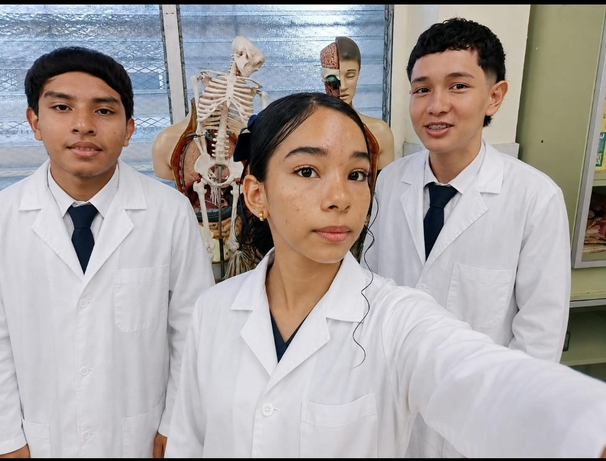

Alimentos
Conoce los carbohidratos, proteínas, lípidos, vitaminas y otros compuestos presentes en nuestros alimentos.
Explorar →CIENCIA • TECNOLOGÍA • VIDA COTIDIANA
Descubre cómo la química orgánica está presente en los alimentos que consumes, los medicamentos, los cosméticos y muchos de los productos que utilizas todos los días.

CONOCE LA QUÍMICA
La química orgánica estudia una gran cantidad de compuestos basados principalmente en el carbono.
Aunque pueda parecer una materia complicada, está presente en muchas cosas que utilizamos diariamente.
Desde los nutrientes de nuestros alimentos hasta los componentes de medicamentos, perfumes, cosméticos, plásticos y productos de limpieza.
Aprender química orgánica también significa comprender mejor los productos que forman parte de nuestra vida cotidiana.
EXPLORA
Conoce los carbohidratos, proteínas, lípidos, vitaminas y otros compuestos presentes en nuestros alimentos.
Explorar →Descubre algunas moléculas orgánicas utilizadas en medicamentos y comprende su importancia química.
Explorar →Aprende sobre los compuestos que participan en perfumes, cremas, champús y otros productos cosméticos.
Explorar →Consulta nuestra base de datos y descubre qué compuestos orgánicos se relacionan con productos de uso diario.
Explorar →APRENDE DE FORMA INTERACTIVA
Explora conceptos, consulta productos, descubre compuestos y pon a prueba tus conocimientos mediante actividades interactivas.
Comenzar el quiz